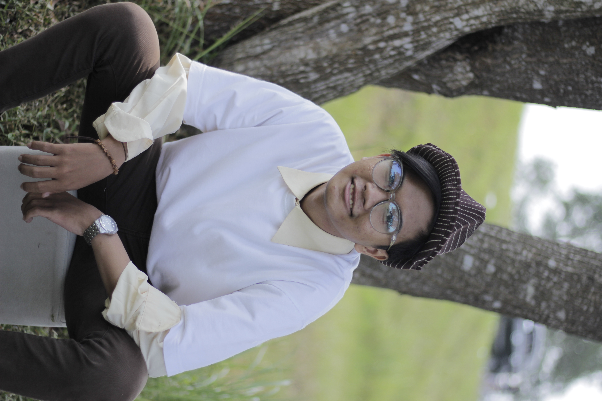

ABOUT ME

Nama : Yudith Nico Priambodo
TTL : Tegal, 10 Juni 2003
Alamat : Cilacap
Hallo semua!! Saya seorang Mahasiswa yang biasa aja, tapi nanti... akan menjadi orang yang istimewa. Saya mahasiswa dari jurusan informatika Universitas Jendral Soedirman, bukan copet ataupun preman. Saya lahir di Tegal, 10 Juni 2003. Mohon diingat saya bukan anak nakal, tapi anak mama yang tentunya baik juga :).
Kalau dilihat dari riwayat pendidikan memang saya sering pindah karena pekerjaan orangtua. Tapi kalau soal wanita saya ga akan pindah-pindah kok.., cukup satu aja hehe...
Silahkan bisa langsung aja klik link sosmed saya di bawah yaa xixixi...